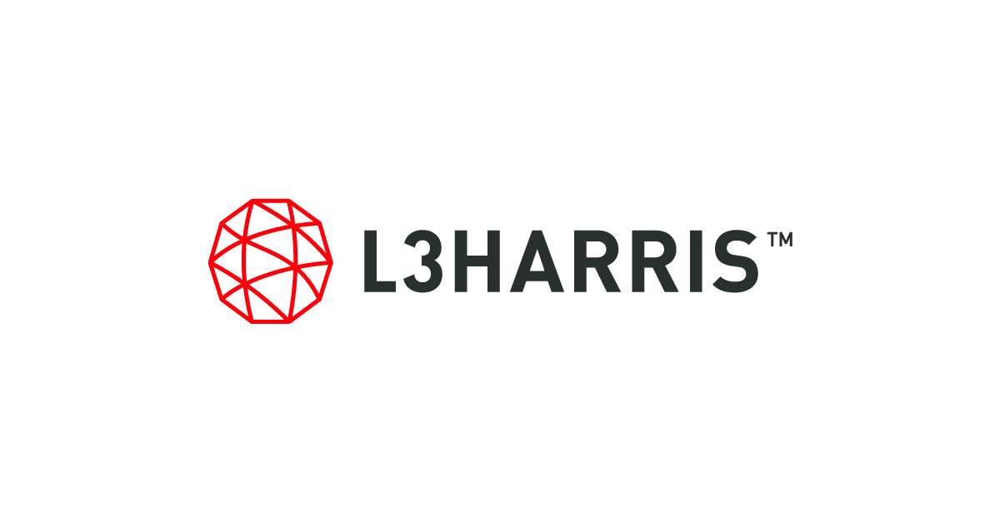
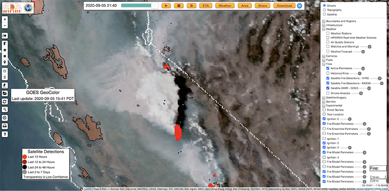
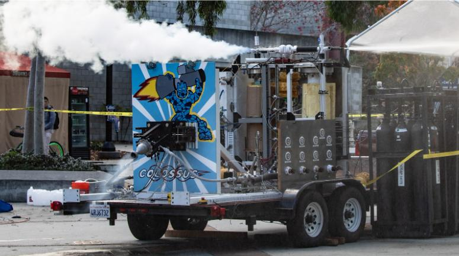
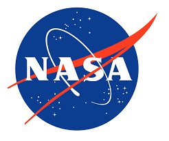

My Journey
Apr 2024
Led a seven figure Phased Array Antenna concepts for the US Navy as a Systems Engineer. Supported the contract with MATLAB modeling, requirement development, and design iteration.

Jan 2024
Started my Master's in Data Science at UC Berkeley, focusing on advanced statistical modeling and machine learning.

Jun 2023
Joined L3 Harris and contributed to a multi-network telecommunications project, enhancing my skills in systems engineering.
Jun 2023
Graduated with a Bachelor's in Mechanical Engineering from UC San Diego, where I developed a love for computational tools.
Mar 2023
Coauthored a paper with with Dr. Jacqueline Greene from the UCSD Medical Center on a 3D printed device to assist her surgical patients play instruments, post surgery.

Aug 2022
Started an internship at San Diego Super Computer Center, working on wildfire modeling and dynamic data-driven simulations. The first time I was able to witness the power of machine learning at scale.
Jan 2022
Changed teams within SEDS to join Colossus as a structural engineer supported the liquid rocket engine test stand. I worked on mounting electronics and pneumatics, as well as the blast shield. Cold flowed with nitrogen and liquid oxygen for proof of concept prior to liquid combustion test.
Sep 2021
Structures lead for Pythia CubeSat satellite. Pythia is a 3U CubeSat designed for continuous collection, processing, and transmission of radio spectrum data captured from the surface of the Earth. Did not recieve funding for launch.
